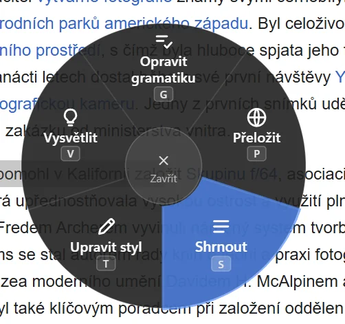
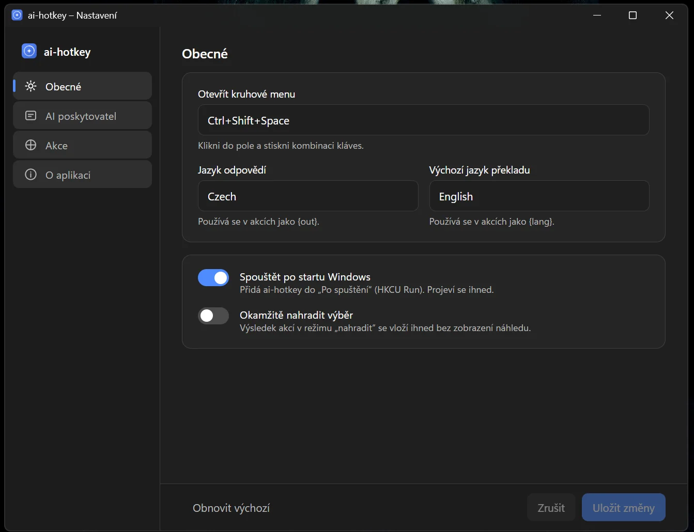
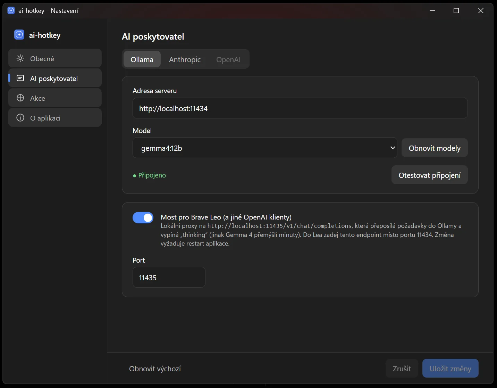

ai-hotkey
Označím text, stisknu zkratku — a AI mi ho opraví, přeloží nebo shrne. Kdekoli, bez kopírování do chatu.
Co je ai-hotkey?
Problém: Většinu pracovního dne něco píšu — testovací scénáře, hlášení chyb, maily, zprávy kolegům. A pořád dokola řeším tři stejné věci: opravit češtinu, přeložit odstavec do angličtiny, zkrátit něco dlouhého. Až doteď to znamenalo text zkopírovat, přepnout do okna s AI chatem, vložit, počkat, zkopírovat zpátky. Funguje to, ale je to otrava — a hotové nástroje, které tohle umí přímo v systému, posílají všechno, co označíte, na cizí server.
Řešení: Malá aplikace, která tiše běží na pozadí
Windows. Označím text v jakémkoli programu, stisknu Ctrl+Shift+Space a u kurzoru vyskočí
kolečko s pěti tlačítky: Opravit gramatiku, Přeložit, Shrnout, Vysvětlit, Upravit styl.
Kliknu (nebo stisknu písmeno) a za pár vteřin mám v panelu výsledek — u oprav i s barevným
porovnáním „před / po", ať vidím, co přesně se změnilo. Enter vloží výsledek na místo
původního textu. Nic se nepřepíše, dokud to sám neodsouhlasím.
Výsledek: Jedna zkratka, která funguje všude — v prohlížeči, v Jiře, v editoru, v Telegramu. A hlavně: umělá inteligence běží u mě doma, na grafické kartě v počítači. Text nikam neodchází. Jen když sám chci — třeba u překladů, kde je cloudový model znatelně lepší — přepnu jedním kliknutím na Claude.
Ctrl+Shift+Space
+ vlastní prompty
AI běží doma na grafice
s AI jako parťákem
Jak to vypadá
Dvě krátká videa z reálného použití a pár obrázků z Nastavení — na vše jde kliknout a zvětšit




Jak to funguje
Co se stane mezi stiskem zkratky a vloženým textem — lidsky
Celé kouzlo je v tom, že appka nepotřebuje s ničím spolupracovat. Nezajímá ji, jestli píšu v prohlížeči, ve Wordu nebo v chatu. Když stisknu zkratku, sama za mě „stiskne" Ctrl+C, přečte si, co se zkopírovalo, a původní obsah schránky hned vrátí zpátky — takže o nic nepřijdu. Pak ukáže kolečko, pošle text umělé inteligenci a výsledek vloží zpět tam, kde jsem měl kurzor. Proto to funguje úplně všude.
Co umí
Pět akcí, které v kolečku najdete hned po instalaci — a možnost přidat si vlastní
Opravit gramatikuG
Překlepy, čárky, shoda podmětu s přísudkem. Panel ukáže, co se změnilo (červeně původní, modře nové), a Enter opravu vloží na místo výběru. Tohle je akce, kterou používám nejčastěji — v mailech i v Jiře.
PřeložitP
Do angličtiny (nebo jiného jazyka, který si nastavíte). Výsledek zůstane v panelu — Enter ho zkopíruje, Ctrl+Enter rovnou nahradí originál. Na překlady mám napevno nastavený Claude: zní prostě přirozeněji než model, co mám doma.
ShrnoutS
Dlouhý mail nebo článek na pár odrážek. Přijde hezky naformátované, a když to zkopíruji, ve schránce je čistý text s odrážkami — bez podivných značek. Odpověď je vždycky česky, i když je původní text anglicky.
VysvětlitV
Neznámé slovo, kus kódu, chybová hláška, věta ze smlouvy — vysvětlení srozumitelně a česky. Nic nenahrazuje, jen ukáže. Přesně ta práce, na kterou stačí model doma: rychle, bez internetu, zadarmo.
Upravit stylT
Formálněji, stručněji, přátelštěji. Stejná věta pro kolegu v chatu i pro mail zákazníkovi — jen s jiným tónem. Porovnání ukáže, co AI změnila, než to odsouhlasím.
Vlastní akce
Cokoli dalšího, co děláte často: „přepiš do bodů", „udělej z toho tweet", „najdi chyby v kódu". Napíšete pokyn vlastními slovy, vyberete ikonu a písmeno, a akce se objeví v kolečku. Tlačítko Vyzkoušet ji otestuje rovnou v Nastavení.
AI doma, nebo v cloudu?
Proč používám oboje — a co dělá který
„AI doma" znamená, že v počítači mám grafickou kartu, na které běží stažený jazykový model — konkrétně Gemma 4 od Googlu, přes program Ollama. Nic neplatím, nic nikam neposílám, funguje to i bez internetu. Na opravu češtiny, vysvětlení nebo shrnutí to bohatě stačí a odpověď mám do pár vteřin.
Jenže překlady. Tam je rozdíl mezi domácím modelem a Claude od Anthropicu pořád vidět — cloudový model volí přirozenější slova a nezní jako učebnice. Takže je kombinuju podle toho, na co jsou dobré:
Zadarmo, offline, soukromé. Musel jsem ji jen naučit „nepřemýšlet nahlas" — víc níž v tom, na co jsem narazil.
Přirozenější angličtina. Platí se za použití, ale u pár překladů denně jde o koruny. Do cloudu jde jen ten jeden označený text, nic víc.
V hlavičce panelu je rozbalovací seznam modelů. Přepnu — a výsledek se rovnou přepočítá novým modelem. Každé akci jde taky napevno přiřadit ten „její".
běžet lokálně u mě doma misto
v cizím cloudu… posune vec dál."
Gemma 4 › Opravit gramatiku · Porovnání
cas časem · misto místo · vec věc
Sonnet 5 › Přeložit
„…save time through automation, run
locally at home instead of someone
else's cloud… moves things forward."
Enter › nahradit · Ctrl+C › kopírovat
Proč je to udělané zrovna takhle
Pár rozhodnutí, která se cestou ukázala jako důležitá
První verze vkládala opravený text automaticky. Rychlé, ale nepříjemné — AI občas změní i to, co jsem změnit nechtěl. Teď se vždycky nejdřív ukáže panel s porovnáním a nahradí se až po Enteru. Kdo chce staré chování, má v Nastavení přepínač.
Windows sice mají způsoby, jak z aplikace „vyčíst" označený text, ale každý program je podporuje jinak (nebo vůbec). Obyčejné Ctrl+C funguje všude. Cena je jen to, že se na zlomek vteřiny přepíše schránka — a hned se zase vrátí.
Domácí model měl tendenci u shrnutí sklouznout do angličtiny, i když jsem mu říkal „drž jazyk originálu". Pomohlo až říct mu to natvrdo: „piš česky". Jazyk odpovědi je proto pevně v Nastavení a každý pokyn ho dostane napsaný výslovně.
Doma mám i linuxový server a časem chci appku i tam. Proto je všechno, co je specifické pro Windows (zkratky, schránka, okna), schované v jednom oddělitelném kousku — zbytek se přenese beze změn.
Na Windows mám léta AutoHotkey a nabízelo se to. Jenže kolečko, průběžně přibývající text a barevné porovnání jsou věci, které se v něm dělají hrozně těžko — a na Linux nejde vůbec. Tak vznikla samostatná aplikace (technicky Tauri: Rust + webové rozhraní).
Stejný domácí model používá i AI asistent v prohlížeči Brave. Ten ale neuměl model požádat, aby „nepřemýšlel nahlas", a shrnutí stránky trvalo minuty. Malý „most" uvnitř ai-hotkey to za něj zařídí — z minut jsou čtyři vteřiny.
Na co jsem cestou narazil
Věci, které mě zdržely nejvíc — pro zvědavé je u každé i technická poznámka
Nová Gemma umí před odpovědí „přemýšlet nahlas" — a když jí to nikdo nezakáže, rozepíše se nad opravou jedné věty na tisíce slov úvah, které nikdo nečte. Výsledek: minuty čekání na dvě opravené čárky. Stačilo přemýšlení vypnout a odpověď je do pár vteřin.
technicky: Gemma 4 i Qwen 3 jsou „thinking" modely; Ollama /api/chat bere think:false, OpenAI-kompatibilní /v1 jen reasoning_effort:"none". Odtud „most" pro Brave Leo.
Klasická chyba, kterou zná každý, kdo někdy psal program s okny: dvě části aplikace na sebe navzájem čekaly a nikdo se nehnul. Projevilo se to jen tehdy, když jsem zkratku stiskl podruhé s otevřeným kolečkem. Hledání trvalo déle než oprava.
technicky: hide()/show()/is_visible() volané přímo v callbacku globální zkratky = deadlock. Řešení: práci s oknem odpálit ve vlastním vlákně a stav popupu držet v AtomicBool.
Po restartu Ollamy zůstaly na pozadí běžet staré kopie modelu a držely celou paměť grafiky. Nový model se pak tísnil na zbytku a odpovídal pětkrát pomaleji — a já dlouho nechápal proč. Od té doby po restartu kontroluju, co v grafice skutečně sedí.
technicky: llama-server.exe podprocesy přežijí zabití Ollamy; 3 zombie = plná VRAM, 9 tok/s. Zabít i je, spustit Ollamu s env proměnnými v témže procesu, ověřit nvidia-smi. Finální ladění: kontext 12288, flash attention, KV cache q8_0 → 50 tok/s.
Domácí model má z výroby nastavenou docela krátkou „paměť" na vstup. Když jsem mu poslal celou stránku ke shrnutí, konec prostě zahodil a shrnul jen začátek — bez varování. Bylo potřeba mu tu paměť zvětšit a hlavně ověřit, že se změna opravdu projevila.
technicky: výchozí kontext Ollamy je 4096 tokenů → OLLAMA_CONTEXT_LENGTH=12288 a kontrola n_ctx_slot v server.log.
Mám monitor s velkým zvětšením písma (150 %) a kruhové okno se na něm kreslilo napůl mimo a s ošklivým čtvercovým stínem kolem. Zní to jako drobnost, ale právě takové drobnosti rozhodují, jestli chcete appku používat, nebo ne.
technicky: pozice kurzoru a rozměry okna jsou ve fyzických px, config v logických → násobit scale_factor(); SVG na 100 % okna; frameless kruh chce shadow: false, Mica/Acrylic by byl taky čtvercový.
Začalo to obyčejným seznamem, pak barevné kolečko s emoji (na Windows vypadaly hrozně), pak čistší kolečko a nakonec i panel s porovnáním. Čtyři kola, pokaždé s nezávislou zpětnou vazbou na použitelnost — a pokaždé se ukázalo, že jde být jednodušší.
technicky: Fluent vzhled — tmavý průsvitný kruh, stroke ikony místo emoji, adaptivní výška panelu, slovní diff (LCS).
Pro zvědavé: z čeho je to postavené
Tuhle část klidně přeskočte — je pro ty, kdo chtějí vědět, co je pod kapotou
Jádro
- Tauri v2 · Rust
- Tray, autostart, single-instance
- Globální zkratky (global-shortcut)
- Vlastní ikona, NSIS instalátor
UI
- Vanilla TypeScript + Vite
- SVG kolečko, Fluent vzhled
- Panel s Markdown renderem
- Slovní diff (LCS)
AI vrstva
- Trait
LlmProvider - Ollama — Gemma 4 12B, stream
- Anthropic — Sonnet 5 / Opus 5 / Haiku 4.5
- Leo bridge (axum proxy)
Platforma
- Windows 11 — hotovo
- enigo — simulace kláves
- Win32 fokus (SetForegroundWindow)
- Linux — brief připravený
Kde končí můj text
Ve výchozím stavu nikde — označený text jde do modelu na mé grafické kartě a tam to končí. Žádný účet, žádná registrace, žádné sbírání dat. Do cloudu (Claude) odchází jen ten kousek textu, u kterého si to sám přepnu, typicky překlad. Je to nástroj, který jsem si postavil pro sebe; a přesně tak, jak bych chtěl, aby se choval každý nástroj, kterému svěřuju, co píšu.
Kdyby vás něco z toho zajímalo blíž — jak to funguje, nebo jestli by se vám něco takového hodilo — klidně se ozvěte.